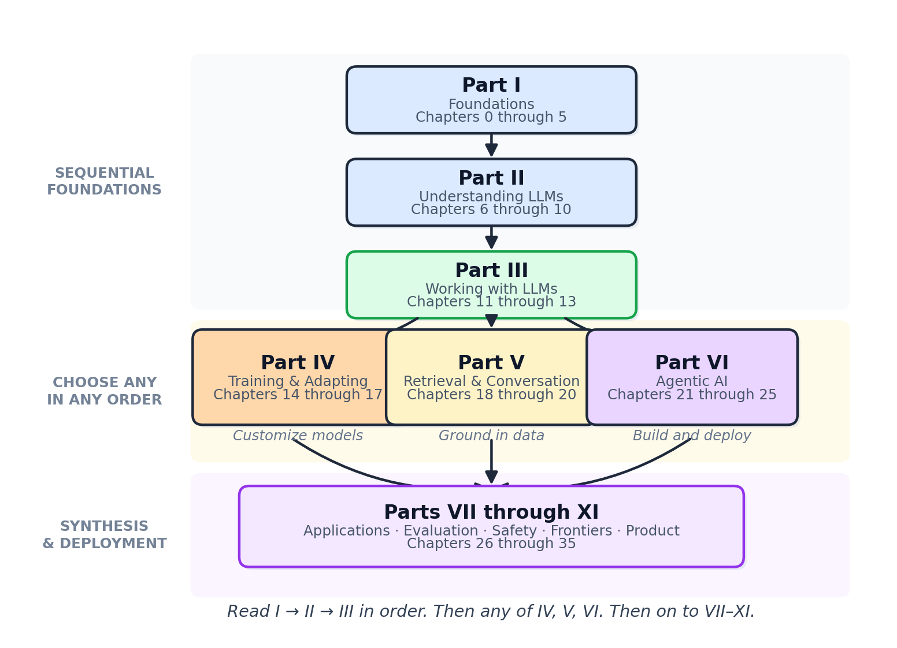

"The best way to learn a complex technology is not to study it in isolation, but to build something real with it, then understand why it works."
Sage, Learning by Building AI Agent
Sixteen parts and 82 chapters trace a single arc: from the math under one attention head to the strategy for deciding which problems are worth solving with LLMs at all. The early parts develop the substrate; the middle parts develop the working LLM stack; the later parts develop the systems, the safety, and the strategy you need to ship into a real organization. Three reference appendices sit alongside as the toolbox.
Parts I-II are the substrate (math, tokenization, the transformer, pretraining, inference, interpretability). Parts III-VI are the working stack (APIs, prompts, training, multimodal, agents). Parts VII-VIII are grounding and dialog (retrieval, conversational AI). Parts IX-XI are the trust half (evaluation, security, ethics). Parts XII-XIII are systems engineering (scale, LLMOps). Parts XIV-XVI are strategy and frontier (product design, industry applications, open research questions). Material from 2024-2026 is woven into the relevant chapter rather than gated behind a "recent advances" appendix.
The Sixteen Parts
- Part I: LLM Building Blocks. Six chapters that build the substrate. PyTorch and classical ML, NLP and text representation, sequence models and attention, the transformer architecture (with a 300-line from-scratch lab), and decoding strategies including the new diffusion-based language models. By the end of Chapter 3 you will have built a working transformer block in PyTorch.
- Part II: Understanding LLMs. Five chapters on what makes LLMs work at scale. Pre-training and scaling laws, the modern model landscape (frontier closed models, open-weight families, small language models), reasoning models and test-time compute (DeepSeek-R1, o3-mini, Claude Extended Thinking), inference optimization (quantization, KV caching, speculative decoding), and interpretability (probing, attention attribution, sparse autoencoders). You will reproduce scaling-law predictions and benchmark quantization on a real model.
- Part III: Working with LLMs. Four chapters on the day-to-day API surface. Structured output and function calling across providers, prompt engineering with automated optimization via DSPy, and hybrid ML+LLM architectures for when an LLM is not the right tool. You will build a production prompt-management system with multi-provider failover.
- Part IV: LLM Training and Adaptation. Five chapters on customizing models. Synthetic data generation, fine-tuning fundamentals, parameter-efficient methods (LoRA, QLoRA, adapters), distillation and merging, and the alignment stack (RLHF, DPO, KTO, IPO, preference modeling). You will LoRA-tune a 7B model on domain data and train a reward model.
- Part V: Multimodal LLMs. Six chapters on models that hear, see, move, and imagine. Audio and music (Suno v4, ElevenLabs), document understanding and OCR, vision-language models, unified omni-architectures (GPT-5-omni, Gemini 2 Pro Vision, Llama 4 Scout), 3D generation and neural scenes (Gaussian Splatting), and vision-language-action models for robotics (OpenVLA, pi-0.5), with world models (Genie 3, V-JEPA 2) as the substrate.
- Part VI: Agentic AI. Five chapters that turn LLMs into systems that take actions. Agent foundations (the ReAct loop, memory architectures, planning), tool use and protocols (function calling, MCP, A2A, AG-UI), multi-agent orchestration, specialized agents (code, browser, research), and the part-specific tools of the trade. You will build a multi-agent system where a supervisor delegates to specialized workers coordinating through shared state.
- Part VII: Retrieval & Information Extraction with LLMs. Six chapters on grounding LLMs in external knowledge. Embeddings and vector databases, retrieval-augmented generation (including long-context tradeoffs and GraphRAG), cross-modal and multimodal RAG, structured information extraction and NER, advanced RAG patterns, and the retrieval toolchain. You will ship a document QA pipeline that retrieves, re-ranks, and synthesizes answers from your own corpus.
- Part VIII: Conversational AI with LLMs. Three chapters on dialog systems. Building conversational AI, voice and realtime multimodal assistants, and the conversational AI toolchain. You will assemble an end-to-end voice assistant that streams partial transcripts, manages turn-taking, and recovers gracefully from interrupted speech.
- Part IX: LLM Evaluation & Observability. Five chapters on shipping with confidence. Evaluation foundations (LLM-as-judge debiasing, statistical rigor), specialized evaluation (RAG faithfulness, agentic trajectories, multimodal grounding, long-context benchmarks), online evaluation and observability (OpenTelemetry for LLMs, drift detection), LLM-as-judge automation, and the evaluation toolchain.
- Part X: LLM Security & Runtime Safety. Five chapters on what can go wrong at runtime. Adversarial security and red teaming (prompt injection, exfiltration, supply-chain attacks, Garak and PyRIT), guardrails and runtime safety, agent safety and autonomy controls, privacy and data protection, and the security toolchain.
- Part XI: LLM Ethics, Trust & Governance. Five chapters on what can go wrong beyond the runtime. Bias and fairness, regulation and compliance (EU AI Act in practice, US frameworks), watermarking and provenance, environmental sustainability, and the responsible-AI toolchain.
- Part XII: LLM Systems at Scale. Five chapters on the systems half. Compute planning, frontier systems hardware (Groq, Cerebras, Tenstorrent, AMD MI355), distributed training systems, edge and on-device LLMs, and the scale toolchain.
- Part XIII: LLMOps Lifecycle. Five chapters on production engineering. Production engineering core (deployment, autoscaling, cost guards), AI gateways and routing, durable workflow orchestration, containers and Kubernetes-native serving, and reliability, SLOs, and the model registry.
- Part XIV: Designing LLM/Agent Products. The product owner's operating model. Five chapters on ideation and finding LLM-worthy problems, vibe-coding prototypes (Cursor, Claude Code, Cline), LLM economics and unit costs, shipping products, and the product toolchain. Reads as a standalone playbook.
- Part XV: Applications of LLMs Across Industries. Eight chapters of vertical depth. Legal (contract review, e-discovery), finance (research synthesis, compliance), healthcare and biomedical (ambient documentation, clinical decision support, FDA and HIPAA), education (tutoring, assessment), cybersecurity (SOC automation, blue and red team), government and public sector, manufacturing and supply chain, and the cross-industry toolchain.
- Part XVI: LLM & Agentic AI Research Frontiers. Four chapters on what is not yet settled. Frontier architectures (state-space models, hybrid attention, the post-transformer landscape), frontier theory (formal theories of reasoning, memory as a computational primitive, mechanistic interpretability at scale), AGI trajectories (HLE, ARC-AGI-2, FrontierMath, alignment at frontier scale, the 2027-2033 timeline debate), and the frontier toolchain.
Three Reference Appendices
The appendices are organized into two groups. Foundations (A: Mathematical Foundations) covers prerequisite linear algebra, probability, calculus, and information theory. For Instructors (B: Course Syllabi, C: Reading Pathways) contains five tested course tracks (undergraduate engineering, undergraduate research, graduate engineering, graduate research, professional bootcamp) with week-by-week schedules, and eight per-audience reading pathways (RAG engineer, agent builder, ML practitioner crossing into LLMs, researcher/grad student, interpretability and safety specialist, founder/PM, course instructor, curious generalist). Framework, tooling, and ops material now lives in the part-specific Tools of the Trade chapters that close each part, so the toolbox sits next to the content that uses it.
How Concepts Build on Each Other
Think of the book as a city. Parts I-II are infrastructure: the roads and power lines without which the rest cannot function. Part III is the center where everyday work happens (calling APIs, writing prompts, hybrid ML). From there, three neighborhoods branch out in parallel. Part IV (Training) is the factory district. Parts V-VI (Multimodal and Agents) extend the model itself. Parts VII-VIII (Retrieval and Conversation) ground the model in your data and your users. The remaining parts (IX-XVI) layer evaluation, safety, scale, operations, and product strategy on top.

What This Book Does Not Cover
This is not a mathematics textbook. The book develops mathematical intuition where needed (attention scores, loss landscapes, scaling-law fits) but does not provide formal proofs or deep statistical learning theory. Readers who want that should pair this book with Bishop's Pattern Recognition and Machine Learning or Goodfellow et al.'s Deep Learning. This is also not a beginner Python tutorial. The book assumes you can write functions, work with dictionaries and lists, install packages, and navigate a terminal. Classical software engineering topics (databases, web frameworks, networking) appear only where they directly intersect with LLM system design.
What Comes Next
The next page tells you whether the book is for you. Proceed to FM.4 Who Should Read This Book.